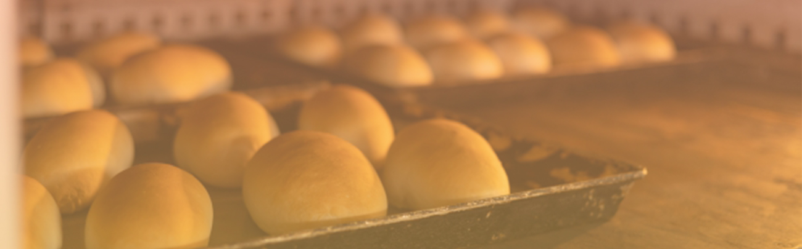
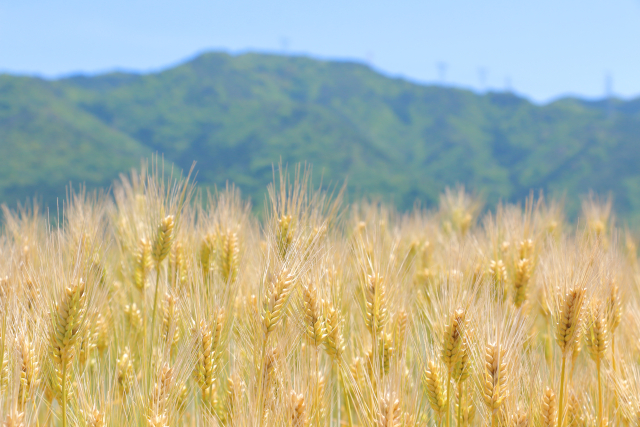
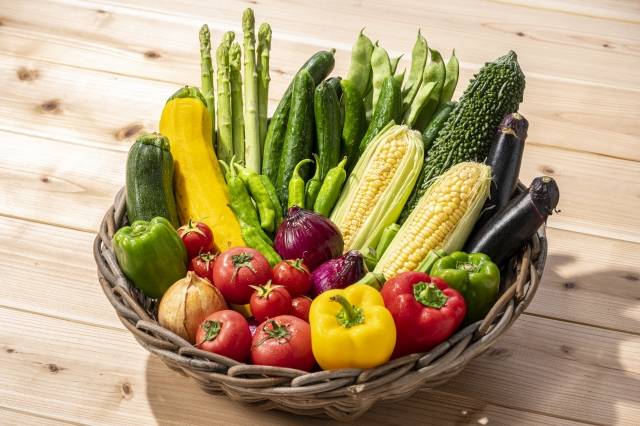
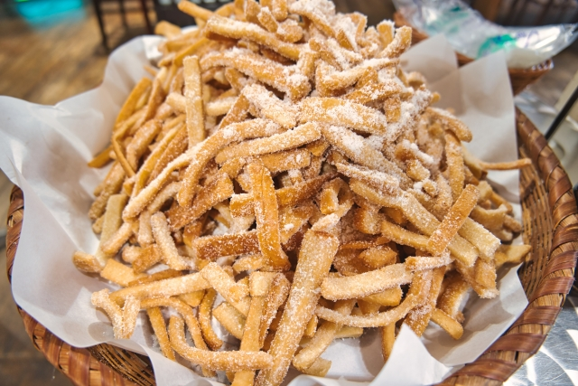

Concept
追求した「もっちり」
北海道・北見産の「ゆめちから」を自家製粉し、低温長時間発酵で焼き上げています。 もっちりとした弾力と、噛むほどに広がる甘みが自慢です。

地元農家の新鮮野菜
私たちのパンには、地元の農家から毎朝届く採れたて野菜をたっぷりと使用しています。 畑から直送された野菜の瑞々しさと自然な甘みは、パンの香ばしさと相性が良く、ひと口ごとに季節を感じていただけます。 旬の恵みを、そのまま食卓へお届けいたします。

フードロスへの取り組み
美味しさだけでなく、食材を大切にする姿勢も大切にしております。 その日に焼き上げたパンは、閉店間近のお時間帯にお求めやすい価格でご提供し、最後まで無駄なくお届けいたします。 また、やむを得ず残ったパンは丁寧に焼き直し、香ばしいラスクとして生まれ変わらせております。 ひとつひとつの命の恵みを大切に、心を込めてお作りしています。
